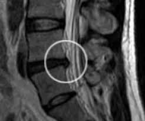

MRI stands for Magnetic Resonance Imaging. This test provides a means of obtaining images of various parts of your body without the use of x-rays (ionizing radiation). MR uses magnetic energy and radio waves to create cross-sectional images or "slices" of the human body. A specialized antenna transmits radiofrequency energy (RF) into the body and then receives the RF signals back. These returning signals are converted into pictures by a computer attached to the scanner. Pictures of almost any part of your body can be obtained at almost any angle. The main component of most MR systems is a large tube shaped or cylindrical magnet. Most of the cylindrical magnets have a strength between 0.5 and 3.0 Tesla and most of the Open or C-shaped magnets have a magnetic strength between 0.01 and 0.35 Tesla.
MRI is safe in the majority of patients although certain patients may not be able to have an MRI. These include people who are extremely claustrophobic and those with implanted medical devices such as certain aneurysm clips in the brain, heart pacemakers, and cochlear (inner ear) implants. Also, those people with pieces of metal close to or in an important organ (such as the eye) may not be scanned. Please inform the technologist if you are pregnant or breast-feeding. There are a few additional safety considerations and some exceptions based on individual circumstances.
You will be asked to lie still on a table that will move your body into the center of the magnet. Prior to the table moving, you will be offered either earplugs to reduce the noise you hear or stereo headphones to listen to your favorite music. You will hear some "knocking" noises while the scanner is preparing for scanning and taking the pictures. You may also feel some vibration during the knocking noise and some slight movement of the table during the examination. Each total MR examination typically is comprised of a series of 2 to 6 sequences, with each sequence lasting between 2 and 15 minutes. An "MR sequence" is an acquisition of data that yields a specific image orientation and a specific type of image appearance or "contrast." Thus a typical exam can last for a total of ten minutes to an hour, depending on the type of exam being run and the MR system being used. Some patients will be given an injection in a vein in their arm containing a substance that improves certain types of images. This substance, called gadolinium, is a very safe contrast agent and is unrelated to the iodine used for CT scans and kidney x-rays.
MRI scanners are good for looking at the non-bony party, or "soft tissues" of the body. In particular, the brain, spinal cord, and nerves are seen much more clearly with MRI than regular x-rays and CT scans. Also, MRI scans are commonly used to look at knees and shoulders following injury to assess the muscles, ligaments, and tendons. Additionally, a MR scanner uses no x-rays or other radiation and is non-invasive. MR is one of the best diagnostic exams for imaging many types of soft-tissue including:
MR imaging and MR angiography are finding a greater role in the detection, diagnosis and treatment of heart disease, heart attack, acute stroke and vascular disease which can lead to stroke. Additionally, MR imaging is a vital part of diagnosing and treating sports injuries, and MR is finding an increasing role in diagnostic mammography. MR is a powerful tool for finding and diagnosing many forms of cancer.
MRI examinations are painless. ALL MRI exams involve strong magnetic fields. For your safety, each MRI appointment requires completion of a screening form to identify any condition you may have that could prevent a MRI examination
Before your scan, a MRI technologist will review your medical/allergy history and answer any questions you may have. He / she will keep you informed and support you throughout the study and be there to help you out of the scanner when the examination is complete
Some MRI examinations require an intravenous (IV) contrast injection (during the exam) to enhance the results of your study. This injection, performed by a nurse or technologist, is placed in a vein in your hand or arm. Contrast reactions / allergies* to the contrast agent, Gadolinium, are rare.
You may be asked to change into a gown before your examination to avoid possible magnetic interference from buckles, snaps, zippers, earrings or silk screening.
Your MRI scan will take place in a specially designed room. You will be helped to lie down on a padded table. The table slides into a large cylindrical magnet (open at both ends). The body part to be studied is positioned in the center of the magnetic field.
Your MRI scan may require that a coil apparatus be placed around the part of your body that your physician is concerned about. This coil enhances visualization of the area of interest.
Motion can distort images, so you will be asked to lie still for periods of 5 to 15 minutes. Total examination times vary from 30 minutes to 1 hour or more depending, on the information needed.
While the machine is in operation, it is normal to hear intermittent humming and thumping sounds. An intercom system in the room will enable you to communicate with the technologist at anytime during your scan. All rooms are air-conditioned, and listening to music is optional. Return to top